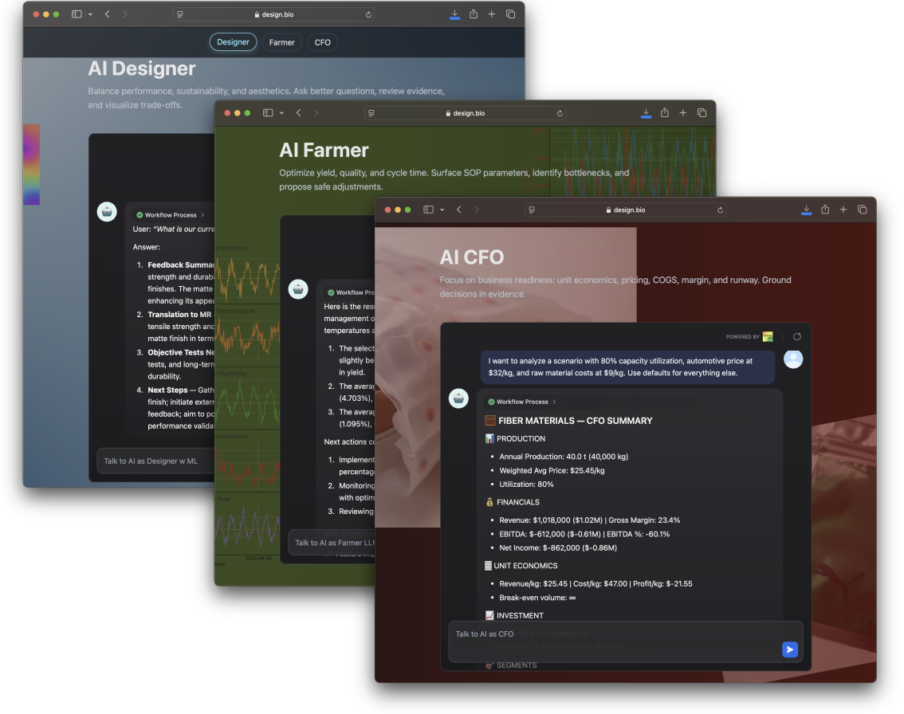
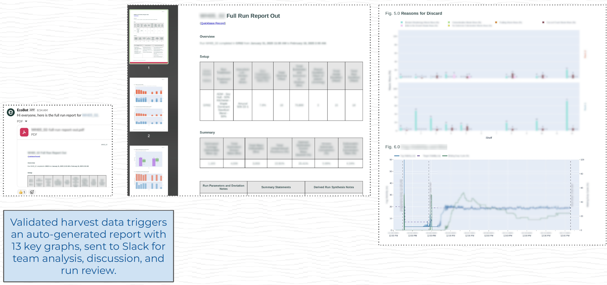
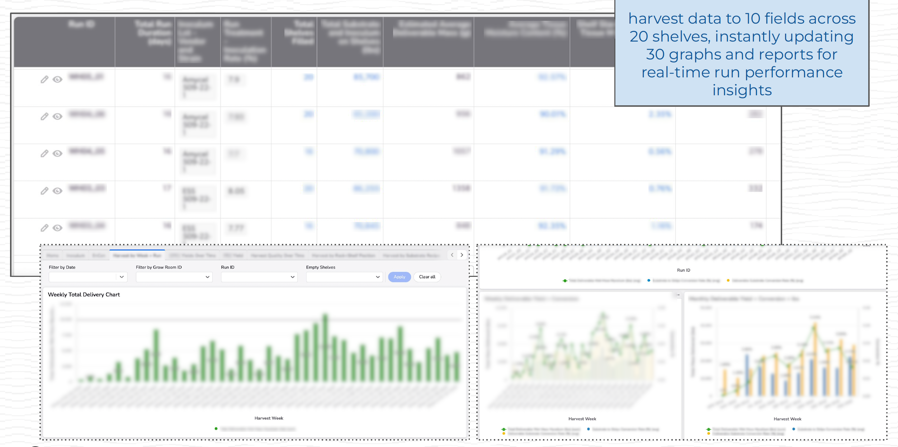
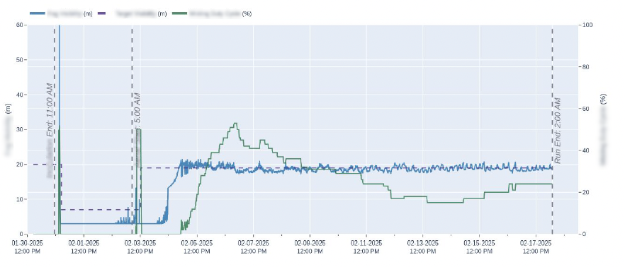
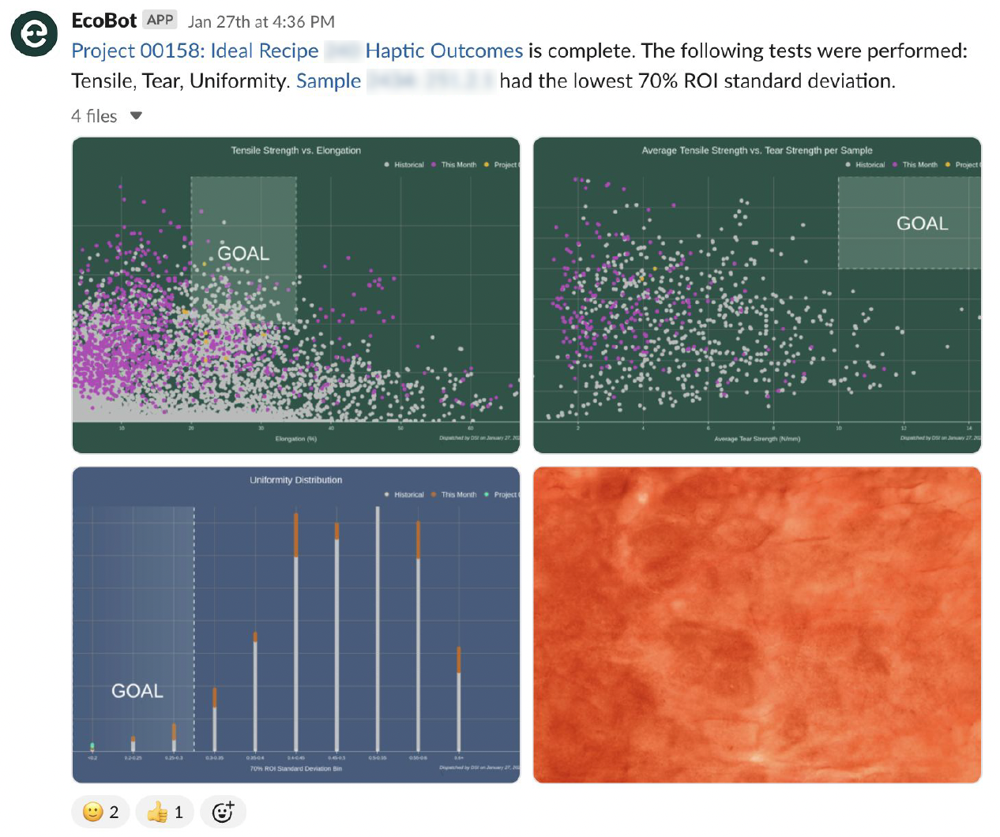
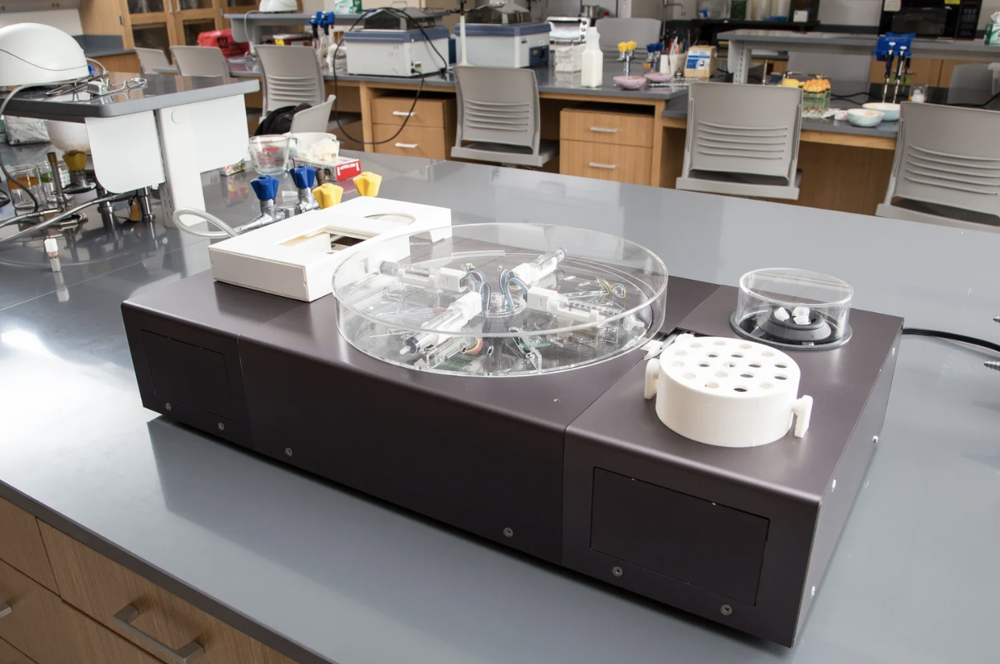
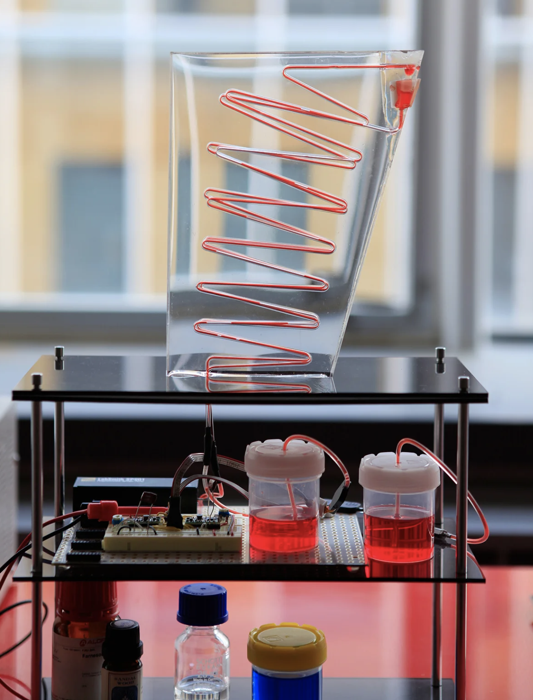

AI Designer, Farmer, CFO
Developed a multi-agent AI framework for biomaterials innovation, presented at Biofabricate’s Biofair (2025). The system staged role-based AI agents as Designer, Farmer, and CFO to simulate the trade-offs between performance, sustainability, and cost. Beyond interactive demos, the framework integrated retrieval-augmented generation (RAG) for scientific and market knowledge, AI-based compliance checks for safety and sustainability claims, and evaluation workflows to benchmark outputs against technical and financial KPIs. Participants used the platform to explore how agent-driven systems can interpret sensor data, optimize production conditions, validate assumptions, and run techno-economic analyses. The project demonstrated how frontier AI methods—applied through transparent, evaluative agents—can help founders, engineers, and executives de-risk decisions and accelerate the path from research to market adoption.

Ecovative Foundry
From 2021 to 2023, I led the development of Ecovative’s Mycelium Foundry—the first high-throughput R&D platform dedicated to cultivating and characterizing fungal biomaterials. The Foundry integrated custom hardware, automated cultivation chambers, and real-time sensing systems to enable controlled growth, parameter sweeps, and longitudinal studies of material performance. We designed AI-assisted experiments across substrate, strain, and environmental variables, generating large-scale datasets used to train predictive models and inform downstream scale-up. The platform became central to Ecovative’s material innovation pipeline for food and textile applications.
Read about the Foundry

Mycelium Compute Chip
Funded by the DARPA Biological Technologies Office’s AIxBIO initiative in 2024, I led the R&D on a mycelium-based compute chip that explores the conductive and morphological properties of fungal tissue as an analog computational substrate. By tuning growth conditions and dopant uptake, we engineered living and post-growth mycelium to function as physical reservoir computers, capable of transforming temporal signals for machine learning tasks. The project combined materials engineering, biofabrication, and neuromorphic design to prototype a new class of biologically derived inference systems.
Read preprint:
bioRxiv: 2025.08.20.671348v1


Enterprise Resource Management
I led Ecovative’s Data Systems and Intelligence team in building a custom enterprise resource management platform to support scaled mycelium manufacturing. The system integrated resource planning, treatment scheduling, harvest tracking, and quality control reporting into a unified data infrastructure. It enabled real-time visibility across operations, standardized production protocols, and supported traceability across substrates, recipes, and material outcomes.


Control Systems for Scaled Mycelium Production
I developed custom sensing and control systems to automate mycelium cultivation at industrial scale. Designed hardware-integrated platforms with environmental sensors, actuators, and cloud-based SCADA infrastructure. Built real-time data pipelines and dashboards for remote monitoring, predictive analytics, and process reproducibility across Ecovative’s global farm network.
Patent-pending:
US20250176479A1
US20250179413A1


Material Performance
Between 2024-2025, I directed Ecovative’s Material Testing Lab, overseeing data collection on mechanical performance, quality metrics, and downstream processing to align with client CTQ criteria. Developed novel testing protocols for mycelium uniformity and managed recipe-linked inventory and process traceability.


Portable Bioreactor
I led the development of Biorealize’s B | reactor—a portable modular biomanufacturing platform that combines incubation, sensing, actuation, and cloud-based control for microbial prototyping. Designed for fast iteration in synthetic biology and fermentation, the B|reactor has been used in brewing fermentation Q/C, materials and bacterial dye innovation, and educational programs.
Patented: US20210340479A1

Microbial Design Studio
As co-founder and CTO of Biorealize, I led the design of a closed-loop, automated biofabrication platform for engineering, culturing, and testing genetically modified organisms. The system integrates core wetlab processes—transformation, incubation, lysis, and purification—into a compact hardware–software stack, enabling combinatorial experimentation and predictive, model-based hybrid workflows for synthetic biology. The platform was tested with PUMA and MIT Design Lab for material innovation.
Patented: US10954483B2

Automated Incubation Platform for Cell-Free Biosynthesis
I designed a closed-loop incubation platform for cell-free protein synthesis, enabling the production of functional biomolecules without living cells. As a proof of concept, I developed a fragrance synthesis module that demonstrates how genetically engineered bacteria can produce aromatic compounds like farnesol found in sandalwood oil.